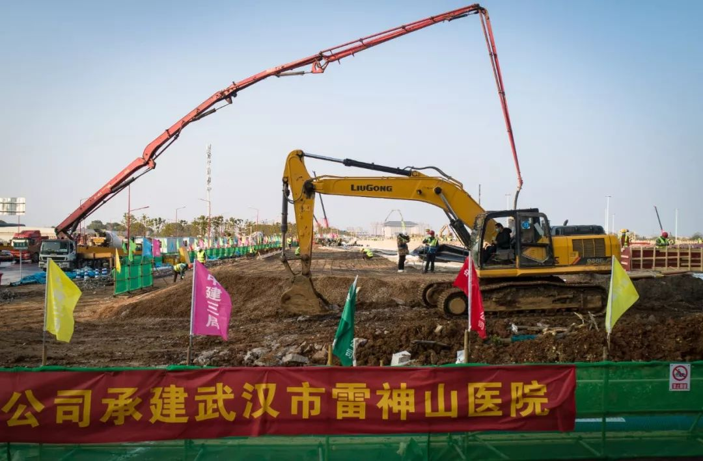
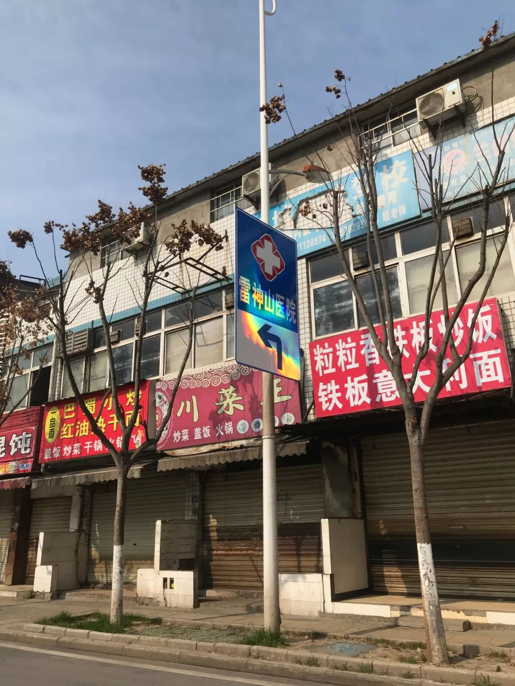
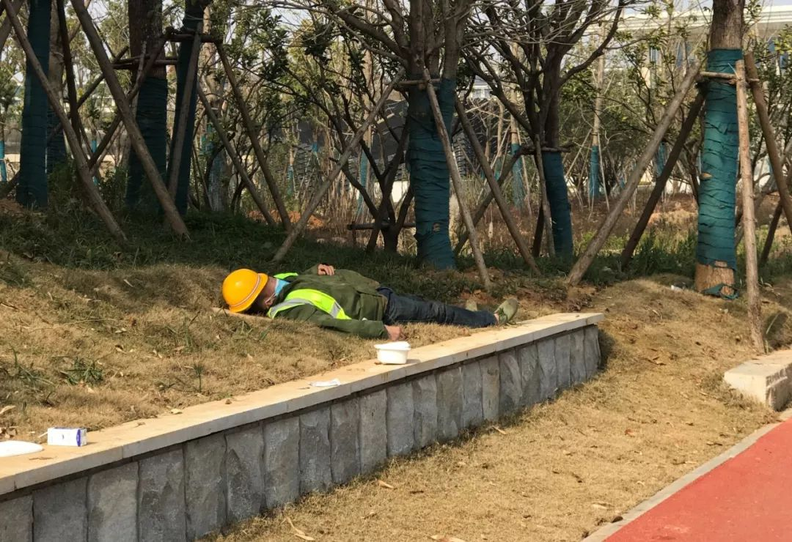
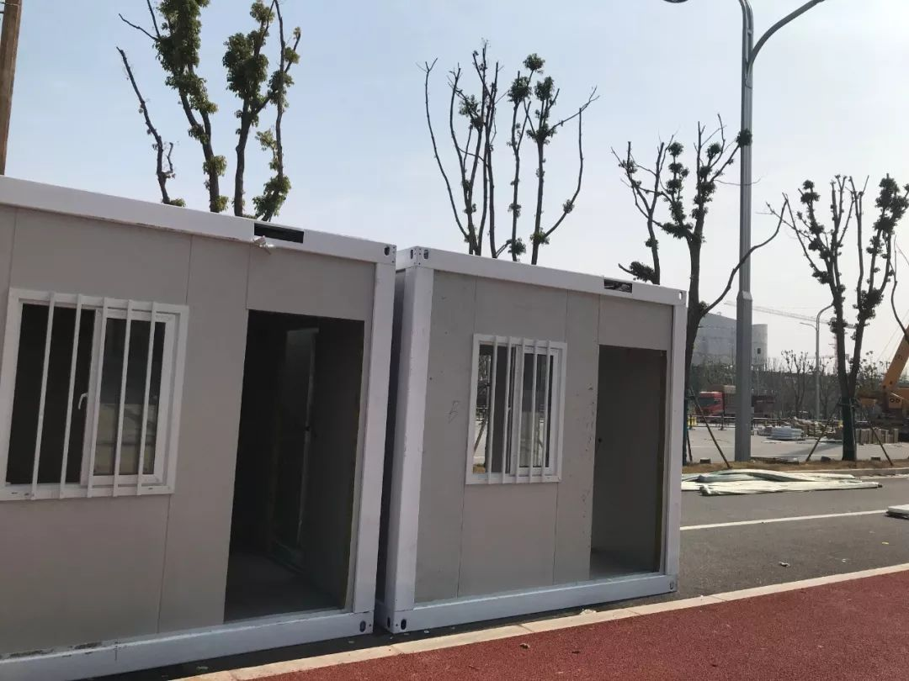

火神山医院，大有玄机！
原文链接 备份链接 数据来源：腾讯新冠肺炎疫情实时追踪 截止2月5日上午7时， 全国新型肺炎个案确诊23696例， 其中湖北患者16678人。 2月3日起，武汉火神山医院开始接诊患者。 武汉另一座“小汤山模式”医院—— 武汉雷神山医院也 …

“来之前，说实话，心里没底，恐慌，但是真正到了武汉以后，看到热火朝天的工地，那么多人在拼命干活，心就踏实下来了。
我的想法就是既来之则安之。
火神山医院交付使用的那天晚上（2.3日），我发烧，37.8，吓了个半死，吃了药以后，第二天早晨体温就降下来了，然后直接就赶到了雷神山医院现场。
我现在还是有点咳嗽。我女儿上午给我打电话听见我还咳（嗽），又哭了。咳嗽不像发烧，它掩饰不了。
我现在怕的是，回去以后，会被举报，举报说我们打黑工，‘钱自己挣了，但是病毒带回来了’。网上（抖音、快手）也有说一些“逆行者”结束工作回到当地以后，被隔离，被举报，还有的被抓起来了。

图/陈莉莉 发自湖北武汉
反正，各人有各人的想法吧。但也都是人之常情。
火神山医院，我和我的工友参建了10多个房间，雷神山医院，我们参建了500多个房间。
2月3日晚上，患者就住进火神山医院了，明天（2月6日），雷神山医院就能住患者了。
明天，我们也就回家了。”
以下来自一线工人葛政委的口述。他背后是参与火神山医院、雷神山医院建设的近万名一线工人。

看到那么多人干活，心里踏实了
我现在（中午12点）还没吃饭，我看着工具，其它工友先去吃，吃完回来后替我，我再去排队吃。我们吃得还好，体力活，我每次都让工作人员给我加饭、加饭、再加饭。
每天中午吃饭时间一个小时左右，11点半到12点半。昨晚我们做到夜里12点多，今天早晨6：40起来干活。平时正常的话，是从早晨7:30工作到晚上8:30。
当时我是看新闻媒体说这边在抢工期，缺熟练工人，我就是专业做这样工作（安装箱房）的。我就在群里发了一个消息，群友有30多个人，10多个报名要来的。自己想来是一回事，现实中，每个人都遇到了家人的阻拦。

我自己的话，我老婆不给来，母亲不给来，兄弟也不给来。我就给她们做思想工作。
怎么说服他们呢？我就说我们就是专业安装这些的，我们不去谁去，对不对？
其实那一瞬间，就想给国家做点事，她们（家里人）就说我偏执，自己想干什么就干什么，不顾及家里人的想法。我两个女儿，一个上初三，一个读高一。她们俩是家里人唯一赞赏我的。也因为我的事，她们会经常看这里的新闻，有点风吹草动就打电话过来，尤其是每天新增的病例让她们发慌。
好多工友家人都不给来的。
我们第一批报名的有10个人，有两个被家人给拦下来了。所有手续都办好了，我打电话过去，他正在跟他老婆吵架，他老婆说，你要去就离婚了。

图/陈莉莉 发自湖北武汉
我们出发的时候是1月28日，大年初四，当时村里每天都在广播，不让外出、不让聚会。我们算是顶风外出了。
当时组织者（中建三局）就说给我们办好了通行证，也跟当地政府、高速路都沟通好了。
我们就一路开着车过来，第一批一共两辆车，微型面包，一车坐7个人，后来又来了两辆车。
出发的时候，我们放了长长的鞭炮，做了一条横幅（援建武汉火神山医院），给自己壮胆，找点信心，也是为了路上能走得顺利些，遇到关卡就不需要太多解释。
来的一路，看不到人，有限的车也都打着横幅。到了河南信阳服务区，我拍了视频发在朋友圈，就是觉得服务区平时挤满了人，那时见不到几个人影儿。这条路我2019年5月走过，当时也是到武汉，那时的武汉街道特别繁华。这次来就不一样了。街道上见不到人。

图/陈莉莉 发自湖北武汉
来的时候，心里没底，恐慌，到了之后，看到看这么多人在这干活，有六、七千人吧，心里有点踏实，但是再一看新闻又有点恐慌，总之还是疫区嘛。
但我想的是既来之则安之。
一路开了800多公里，1月29号凌晨两点到的武汉。那天早晨我戴着口罩在军人体育场跑了会步，接着就是疯狂地赶工期了。
我们工人这里有很多武汉当地人，大家工作在一起，也没有什么隔阂。经常会聊天，但是不会聊疫情，都是聊一些轻松的话题，都是为了减少压力。

来的时候是荒地，
房子盖好，我们就走了
工地上，每天量两次体温，早、晚各一次。
我有过一次高体温，就是火神山医院交付使用的那天晚上（2.3日），我发烧，37.8，吓了个半死，吃了两个药以后，第二天早晨体温就降下来了，然后直接就赶到了雷神山医院现场。
当时特别害怕，加上自己有点咳嗽，心里特别恐慌，体温降下去以后才放心。
我现在还是有点咳嗽。我女儿上午给我打电话听见我还咳（嗽），又哭了。咳嗽不像发烧，它掩饰不了。

图/陈莉莉 发自湖北武汉
我认识的一个卡车司机大年初二从连云港往武汉拉空调，但是回家时，家乡不让回，半路就被隔离了。
还有人会被举报。我一个工友来的路上，被举报了，他们家乡人举报他偷偷跑出来干活挣钱。村里人就给他打电话，问他的情况。
还有一个工友在路上接到家乡当地派出所打的电话，派出所说，你这样出去回家以后是要被判刑的。
这两个工友都因为这种情况半路返回家了。
我这次来，父老乡亲中有一部分人是支持的，还有一部分人是不支持的，我回家的话，面临的肯定不全是欢迎。
我现在怕的是，回去以后，会被举报，举报说我们打黑工，“钱自己挣了，但是病毒带回来了”。网上（抖音、快手）也有说一些“逆行者”结束工作回到当地以后，被隔离，被举报，还有的被抓起来了。
反正，各人有各人的想法吧。也都是人之常情。
但是我想我们会相信政府，不可能让我们失望的吧？

图/陈莉莉 发自湖北武汉
现在在江西九江，湖北鄂州、咸宁，陕西西安，都要建这种医院。我有一个工友差不多跟我同期，他去了福建，那是一个能装300多床位的医院，他觉得没有参加武汉的工作，有点遗憾。
我们做这个工作（盖板房），每到一个工地都是一块荒地，一边是挖掘机、推土机整地平，地基整好了以后，我们就盖房子。盖房的时候，水电什么的都没有，等所有的都齐了，我们又都走了。
这次火神山医院、雷神山医院，比起以前，我们可能想的更多的是，房子建好以后，患者就能住进来了。
也能为社会做点贡献吧，你不是什么什么之一，你就是一个农民工，但是也能做一些自己能做的事情。
雷神山医院刚开始建设的时候，现场都在浇地，我们就先在军运会场地的外围把房子组装起来，这样能节约不少时间，工期是一定要保证的。

工作过程中，每天干活本身不是那么累，沟通要更累一些。有一天，我的手机整整用了8个小时，就是不断地接、打电话，微信沟通。
沟通最多的问题就是组装方式，以及材料的规格。因为现场的材料不是一个厂家的。但是能感觉到发货发得很充足。很多时候，正在工作，突然就接了上级领导的指示，告诉你房型应该怎么设置，我要再交代给工人，来来回回，就这些事。
也有一些观念上的冲突，就是沟通吧。

我以前是个坏人
这一趟出来比同样的工作周期，收入是要高一点。但钱对我来说，真的不是第一位的。有人也许会说，国家不缺你这一个人，但是如果每个人真的都接受这个说法呢？
我最有成就感的是什么呢？火神山医院，我们进入的比较晚，我这个小团队（27个人）组装了10多间房子，雷神山医院，我们这一组组装了500多间房子。基本上，三个房间有四个床位，包括洗手间，洗漱间。

图/陈莉莉 发自湖北武汉
我父亲想当兵，没当成，很向往部队，还对我说，你要去部队啊，当个官。可能是因为这个原因吧，就给我取名叫“葛政委”，这是我的真名，身份证上的名字。可惜我能没能完成他对我的期望。
我出生于1976年，我的父亲生于上世纪50年代。我的家乡是江苏省连云港市东海县，那是一个盛产水晶的地方。这次来武汉的基建人员很多都来自江苏，网上都说我们是“基建狂魔”，这还是我女儿看新闻告诉我的。
其实我以前是个坏人。聚众斗殴，什么都做。老婆一直等我变好，我不能让她看不到希望。前些年父亲病故，家庭十分困难，家人跟着受了很多罪。我是走了很多弯路才明白人生什么时候改变都不晚，我要给家人撑起一片蓝色的天空。
两年前，我才开始做板房安装工作，大家对我也很信任，我在工友群里一直坐着“老大”的位置。
这次（建设火神山医院、雷神山医院）经历对我来说很不一样。怎么说呢，从一个负能量的人转变成一个有着正能量的人，是需要很大的决心和动力的！也因此感到自豪！身为一介平民也能为国家和社会做贡献，足也！

我只上到初中三年级，平时喜欢看书，特别是《意林》《读者》之类的杂志和中国古代诗词。（感觉）好的文章能洗涤心灵，诗词能把我带入一种忘我、洁净的意境。
我们领导找我谈过话，说是合同已经结束了，现在想让我们再留在这做点维修后续的工作，我现在还没跟工友们说，我个人想的是国家用得到的时候就在这里呗，但是不一定每个人都这么想，毕竟（2月6日）就要住患者了。
不管怎么样，我的想法都是好好干活，然后回家。
作者 | 陈莉莉
排版 | 阿丽菜
南风窗新媒体出品

猜你还想看
围观
故事
热文

点击购买最新一期《南风窗》
原文链接 备份链接 数据来源：腾讯新冠肺炎疫情实时追踪 截止2月5日上午7时， 全国新型肺炎个案确诊23696例， 其中湖北患者16678人。 2月3日起，武汉火神山医院开始接诊患者。 武汉另一座“小汤山模式”医院—— 武汉雷神山医院也 …
原文链接 备份链接 因抗击疫情而诞生的武汉火神山医院，创下建设速度和科技装备的历史之最。2月4日上午，率先启用的部分病房正式接收了第一批病人。《财经》记者2月3日下午在现场看到，负责收尾的数千名工作人员仍保持高强度作业， …
原文链接 备份链接 作者 | 薛芳 编辑 | 康晓 出品｜深网·腾讯小满工作室 欢迎下载腾讯新闻APP，阅读更多优质资讯 _编者按：_牵一发而动全身，面对疫情，需要中国全行业上下游携手共度难关，深网推出《共克时艰》系列报道，是为第二篇，记 …
原文链接 备份链接 拥有1000张床位的火神山医院今天开始接收病人，主要救治确诊患者。 1400位来自军队的医护人员已经抵达，院长张思兵大校是SARS防治专家。 拥有1600张床位的雷神山医院预计2月5日完工。 两家医院投入使用一 …
原文链接 备份链接 今天，火神山医院正式交付。9天时间，可容纳1000张床位的医院在武汉落成，参照非典期间北京小汤山医院模式，专门收治新型冠状病毒肺炎患者。在医院床位紧缺的情况之下，大家对火神山和雷神山给予了期望，而实际效果如何，能多大 …